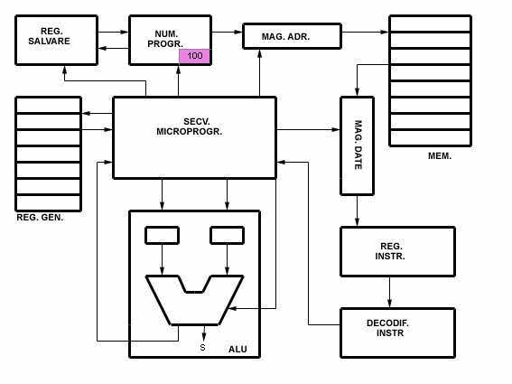
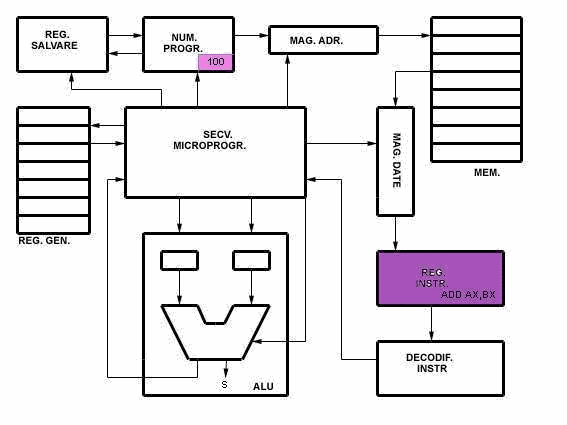
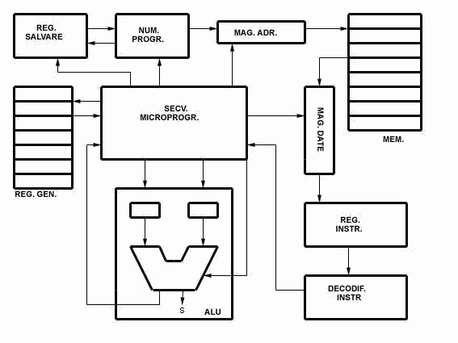

Executia unei instructiuni
trece prin mai multe etape, in functie de tipul instructiunii. Fiecareia
din aceste etape ii corespunde un microprogram distinct in memoria de control
a secventiatorului. In general executia unei instructiuni trece printr-o
faza de extragere sau fetch , o faza de decodificare si o faza de executie
.
Faza de extragere:
Este comuna tuturor instructiunilor. In cadrul acestei faze adresa din
numaratorul de adrese al programului este pusa pe magistrala de date .
Dupa semnalul de READ dat de secventiator , continutul locatiei de memorie
de la adresa respectiva (instructiunea) este pusa pe magistrala de date
. Urmeaza un semnal de LOAD dat de secventiator care determina inscrierea
datelor de pe magistrala in registrul de instructiuni unde va fi
memorata .
Faza de decodificare:
Dupa ce instructiunea a fost memorata in registrul de instructiuni , ea
va trece in decodificatorul de de instructiuni. Prin decodificarea instructiunii
se genereaza un cuvint adresa pentru memoria de control. Cuvintul adresa
generat de decodificator este incarcat intr-un numarator de adrese de microinstructiuni
. Dupa ce instructiunea a fost decodificata , numaratorul de adrese al
programului va fi incrementat .
Faza de executie:
Difera in functie de tipul instructiunii. In faza de executie se extrag
adresele operanzilor din instructiune si se depun in registrele temporare
( latch) ale unitatii aritmetico-logice ALU.
In continuare atit datele din latch-uri cit si codul operatiei se incarca
in ALU unde se va realiza operatia specificata. In urma operatiei
se vor seta flagurile corespunzatoare iar rezultatul va fi inscris in registrul
acumulator.
Pentru o mai buna intelegere
a rolului secventiatorului sa urmarim in continuare o simulare grafica
a executiei unei instructiuni . Presupunem ca numaratorul de adrese a fost
incarcat cu adresa 100 .
Executia instructiunii incepe
cu
|  |
| Fig.4: Faza de extragere |
Dupa cum se poate observa din imaginea de mai sus , numaratorul de adrese al programului pune continutul sau pe magistrala de date . La semnalul de READ dat de secventiator, magistrala trimite adresa 100 la memoria sistem. In memorie, la adresa 100, se afla stocata instructiunea ADD AX,BX. Memoria raspunde prin punerea pe magistrala de date a continutului locatiei de la adresa 100 . Urmatorul pas al secventiatorului este aplicarea semnalului de LOAD magistralei de adrese . Ca urmare a acestui semnal , magistrala de date transfera instructiunea in registrul de instructiuni .O copie a acestei instructiuni va fi pastrata aici pe toata durata executiei acestei instructiuni .
Urmeaza faza de decodificare:
|  |
In faza de decodificare instructiunea
trece din registrul de instructiuni in decodificator unde va fi descompusa
in codul operatiei (CODOP) si adresa operanzi (ADR) . Tot in aceasta faza,
numaratorul de adrese al programului va fi incrementat, el indicind adresa
urmatoarei instructiuni .
| Fig.6: Faza de executie |
In aceasta faza secventiatorul, pe baza datelor primite de la decodificator, va genera toate semnalele necesare executarii instructiunii . Astfel se comanda deschiderea si inchiderea portilor astfel incit sa poata fi incarcat in registrii temporari continutul acumulatorului (reg. AX) si al registruluiBX . In continuare, continutul registrilor temporari precum si codul operatiei (ADD) vor fi incarcate in unitatea aritmetico-logica unde are loc executia operatiei . In urma executarii operatiei se vor seta corespunzator indicatorii de stare (s) iar rezultatul va fi depus in registrul acumulator (AX) .
Acum ca am studiat fiecare faza in parte putem trece la inlantuirea lor obtinind astfel imaginea generala a executiei unei instructiuni :
|  |
| Fig.7: Executia in ansamblu a unei instructiuni |